Run your first exchange
Send one purchase order and follow it all the way to the two reply files on disk.
Opening Vendredi for the first time creates a sample workspace called Vendredi in your home folder. Its Supplier partner is ready to receive an order. This handbook uses a second, downloadable workspace with two fictional partners, editable scripts and a deliberately invalid order.
Open the workspace you want to use
- If Northline Supply and East Dock Logistics are in your sidebar, you already have the handbook workspace open. Continue to the order below.
- If you see Supplier, you can send the bundled sample immediately. To follow every example here, download the starter files, extract them into a separate folder, then open that folder with Vendredi.
./vendredi gui ./vendredi-starterOn Windows use .\vendredi.exe gui .\vendredi-starter. If you extracted the folder elsewhere, substitute its path. The downloadable workspace starts with an empty history. Running the exercises creates the transfers shown here.
Submit the carton order
- Look for Running in the top bar. In the sidebar select Northline Supply, then choose Send document….
- Check the partner at the top of the dialog. Choose Send sample order at the lower left. This submits
order.edithrough the partner’s intake. The separate Send button initiates an outbound document or script for that partner. - Open All traffic. Select the inbound ORDERS with reference
PO-1048. Its status should be Accepted. Look for two outbound rows marked Delivered.

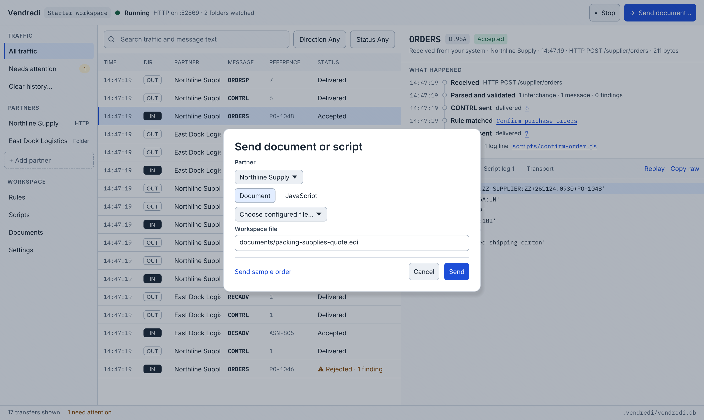
Open replies inside the workspace. The CONTRL acknowledges the incoming interchange. The ORDRSP confirms the purchase order and contains RFF+ON:PO-1048'. Filenames use the local transfer ID, so the numbers depend on the traffic you have already sent.
Read a transfer
Each row is one transmission. The timeline brings the incoming order, its rule, and the replies back together.
- In the header, read the message type and directory. ORDERS · D.96A identifies the order message. The source line shows its direction, partner, time, intake channel and size.
- Read What happened from top to bottom. Select a reply reference to inspect its outbound transfer. Select a rule or script link to open the configuration responsible for that step.
- In Message, select a segment to mark the line. Copy raw copies the interchange text. On a small window, select a traffic row to open the full inspector, expand Show timeline when needed, and use Back to traffic to return.
| Segment in PO-1048 | What to check |
|---|---|
UNB / UNZ | The interchange envelope. UNB identifies BUYER and SUPPLIER and supplies the interchange reference. UNZ repeats that reference. |
UNH / UNT | The individual message. The header declares ORDERS:D:96A:UN. The trailer declares seven segments, counting both UNH and UNT. |
BGM | The business document number is PO-1048. The script reads it when building the confirmation. |
LIN, IMD, QTY | The line identifies CTN-40, describes a recycled shipping carton and requests 120 pieces. |
Findings gives validation details and byte offsets. Script log shows messages recorded by the rule’s JavaScript. Transport shows the stored file or HTTP metadata. Start with the tab that answers your question.
Find the right traffic
Search checks the displayed local time, direction, partner, message type, interchange reference, status and raw message text. It ignores case and treats punctuation literally. While you type, the desktop keeps the last results visible until the new matches arrive.

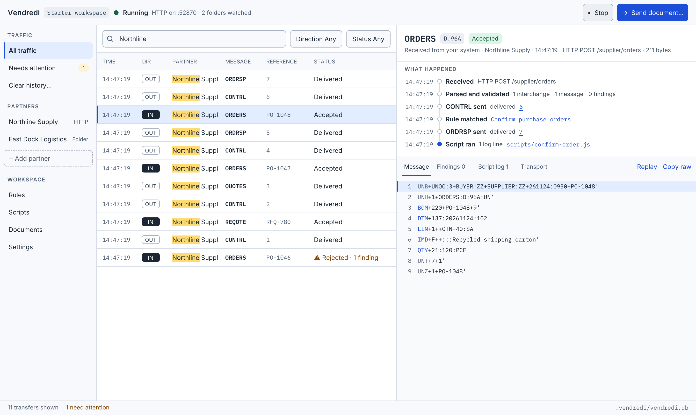
| Try this | What it finds |
|---|---|
Northline | Transfers showing Northline Supply in the Partner column. |
PO-1048 | The order and any reply that contains its reference, even when the reply has its own interchange reference. |
shipping carton | Item descriptions in the order and quotation. Select a result and open Message to see the matching characters. |
BGM+220 | The literal EDIFACT fragment, including the plus sign. |
Delivered or a time such as 14:47 | Displayed status or local time. Use a time from your own table when reproducing this search. |

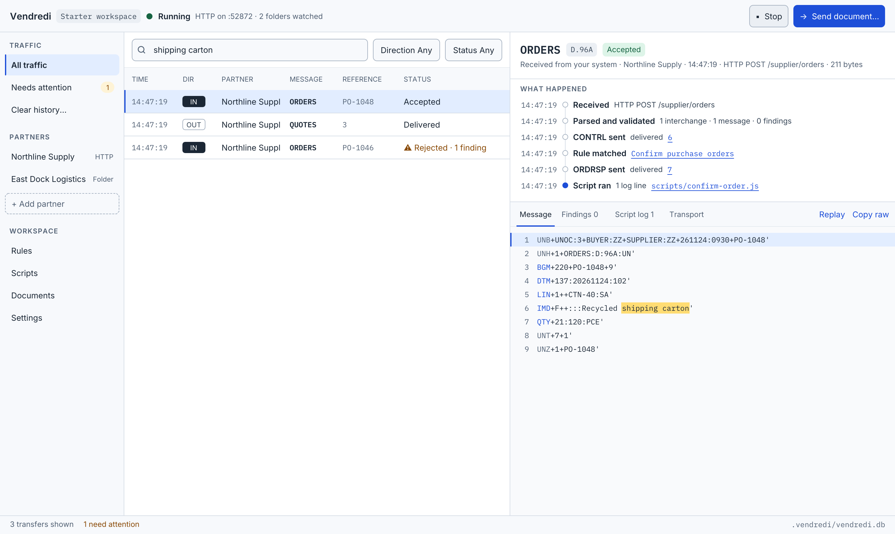
For incoming orders from one partner, select the partner, set Direction → In, then search for ORDERS. Use Status to narrow the set further. Clear the search field to keep the filters. If the result is empty, Clear filters resets the search, direction and status. Select All traffic to leave a partner or attention view.
Send over HTTP or a folder
Choose the channel your integration actually uses. Both transports feed the same rules and produce inspectable exchanges.
Post directly to Northline
Run this from the handbook workspace while its listener is running. The starter listens on port 8980. The bundled Supplier example defaults to 8180. Check the top bar or Settings for the address of your instance.
curl -i --data-binary "@order.edi" -H "Content-Type: application/edifact" http://127.0.0.1:8980/supplier/ordersA normal HTTP receipt is 202. The business response follows the partner’s reply channel. For Northline, inspect the two outbound rows and their files in replies. On Windows use curl.exe with the same arguments.
Receive a consignment at East Dock
From the workspace, publish samples/dispatch-cartons.edi to the warehouse inbox. Copy under a temporary extension and rename the finished file in the same directory. East Dock watches for .edi and claims the file when it is ready.
cp samples/dispatch-cartons.edi dock/inbox/arrival.part
mv dock/inbox/arrival.part dock/inbox/arrival.ediCopy-Item samples/dispatch-cartons.edi dock/inbox/arrival.part
Rename-Item dock/inbox/arrival.part arrival.edi
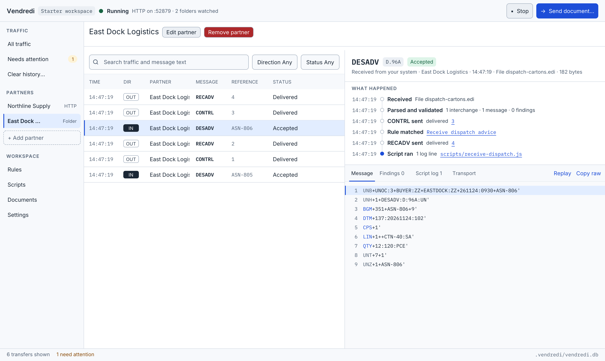
Select East Dock Logistics. The DESADV row has reference ASN-806. The rule logs the consignment and sends a RECADV with RFF+AAK:ASN-806'. Its CONTRL and RECADV files appear in dock/receipts. The original sample remains in samples for another run.
Configure a partner
Choose + Add partner to model another trading partner. For an existing partner, select its name in the sidebar and choose Edit partner. Saving the form updates vendredi.toml and reloads the workspace.

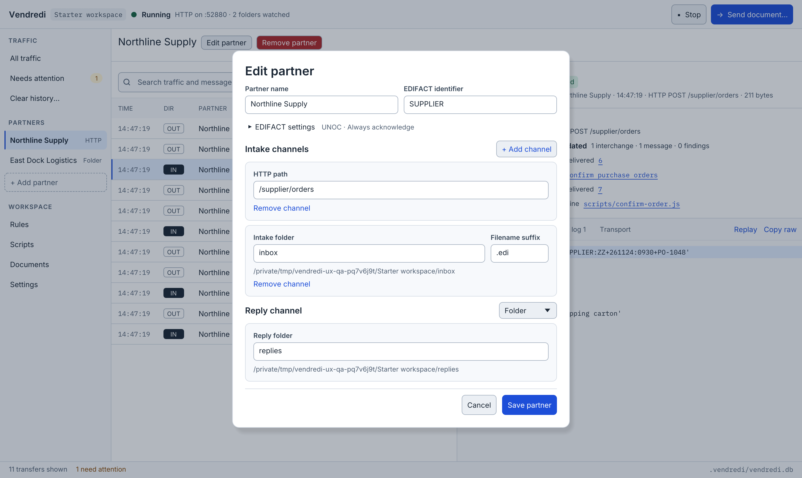
| Control | What to enter |
|---|---|
| Partner name | A distinct name for the sidebar and traffic history. Northline Supply is the display name. |
| EDIFACT identifier | The recipient of your inbound interchange. For Northline the identifier is SUPPLIER and its qualifier is ZZ. Your workspace’s sending identity is BUYER · ZZ. |
| EDIFACT settings | Choose Always, When requested, or Never for automatic acknowledgements. Set the character set and separators to match your integration. |
| Intake channels | Add an HTTP path, a watched folder, or both. A folder has a suffix. A relative folder resolves under the workspace, and the form shows its full path. |
| Reply channel | Choose a folder for local files or HTTP for delivery to your receiver. For HTTP, supply its URL and any headers it requires. |
Keep the incoming and outgoing directories distinct. For a new setup, send one interchange with the configured sender and recipient, then verify the transport metadata on both rows. To remove a partner, use the red Remove partner action beside Edit and confirm the name. At least one partner must remain. Its recorded exchanges are managed separately in traffic history.
Order the rules
Open Rules. Each partner has its own ordered list. Vendredi evaluates the inbound message type, optional version and optional release, then runs the first rule that matches. Put specific matches above broader ones.

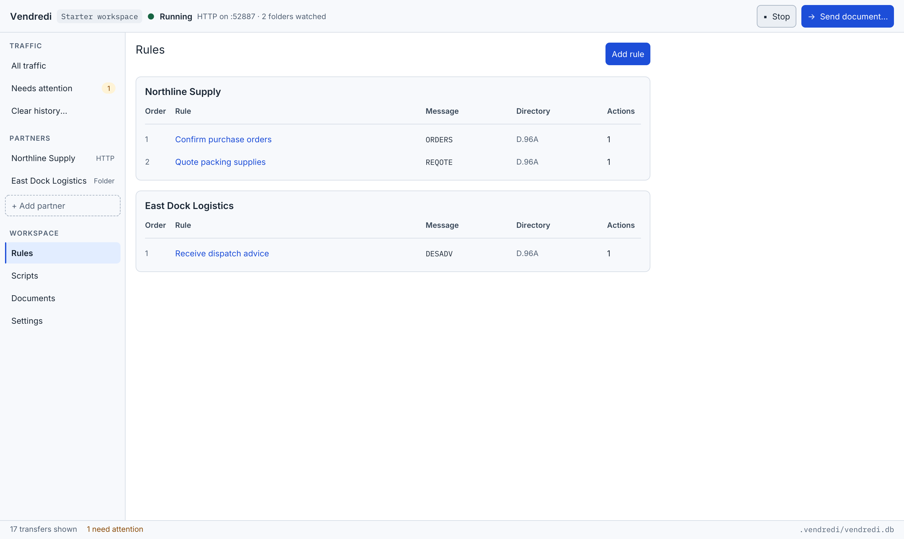
- Open Confirm purchase orders. The match is
ORDERS, versionD, release96A. Leave an optional field blank when the rule should accept any value for that field. - Use Match order to change priority within this partner. The position of a rule and the order of the actions inside it control different things.
- Under Actions, choose + Add action. A rule can send a document, run a script, delay the next action, or simulate a fault. Arrange the actions in the sequence your test needs.
- Choose Save rule. Submit the relevant sample and open Rule matched in its timeline to verify which rule actually ran.

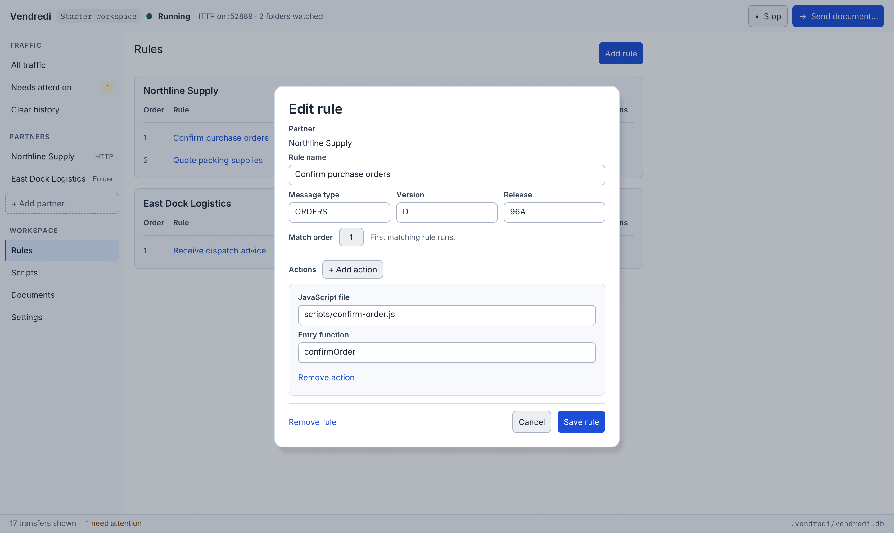
Try a timing test. In a disposable copy of the starter, add a short delay before the confirmation script. Send a new order and watch the outbound confirmation arrive after the delay. Keep the engine running until it finishes.
Make replies depend on input
Use a script when the reply needs data from the incoming message or a value that persists across exchanges. Open Scripts and select scripts/confirm-order.js, or follow the script link in PO-1048’s timeline.

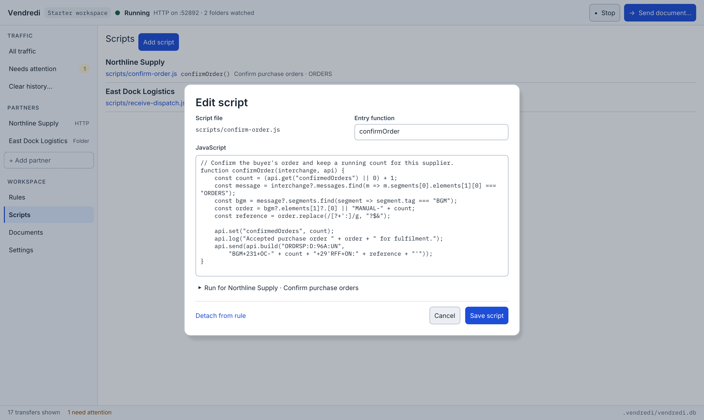
In the starter, confirmOrder reads the BGM document number and increments the partner’s confirmedOrders counter. It logs the incoming order number and builds an ORDRSP that points back to it. The receipt script maintains a separate counter for East Dock.
function sendConfirmation(interchange, api) {
const count = (api.get("demoConfirmations") || 0) + 1;
api.set("demoConfirmations", count);
api.log("Created manual confirmation " + count);
api.send(api.build("ORDRSP:D:96A:UN",
"BGM+231+DEMO-" + count + "+29'"));
}To try it, use Scripts → Add script, select a partner and rule, enter a new workspace filename and the function name sendConfirmation, paste the source, and save. That attaches an action to the rule. To exercise it immediately, choose Send document… → JavaScript, select the same partner and configured script, then choose Send. For a manual send the interchange argument is null. A rule invocation receives the parsed interchange.

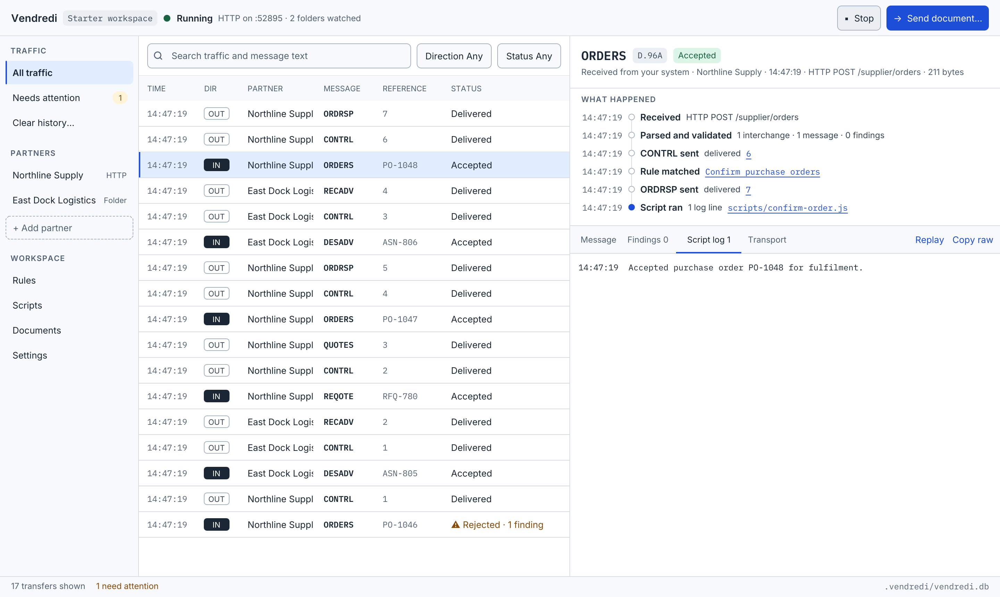
| Script API | Use |
|---|---|
api.log(text) | Write a line that the operator can read in Script log. |
api.get(key), api.set(key, value) | Read and write persistent state scoped to this partner. |
api.build(type, body), api.send(message) | Build a message and enqueue it for the partner’s reply channel. Vendredi builds the interchange envelope and segment counts. |
api.contrl() | Request an acknowledgement while processing an inbound interchange. |
api.nextReference(), api.now() | Allocate a partner reference or read the current time in Unix milliseconds. |
When embedding an incoming field in EDIFACT, escape service characters. The starter scripts show this for their standard separators. Detach from rule removes the binding after confirmation and keeps the source file.
Edit a repeatable document
Use a static document when every matching request should receive the same message body. Northline’s Quote packing supplies rule answers a REQOTE with a QUOTES message for 100 cartons at EUR 2.40 each.

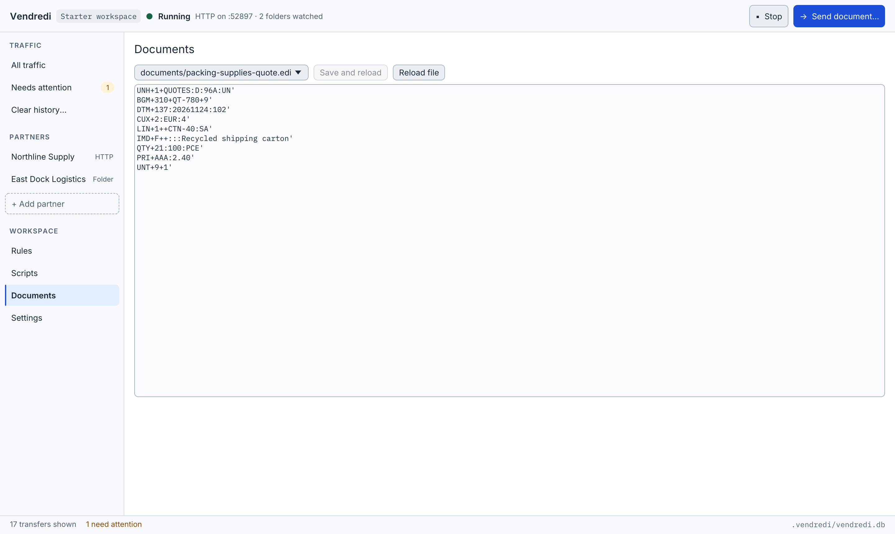
- Open Documents and select
documents/packing-supplies-quote.edi. The file contains one message from UNH to UNT using the default separators. - In a test copy, change
PRI+AAA:2.40'toPRI+AAA:2.55'. Choose Save and reload. The editor also supports Latin-1 text. - Publish
samples/quote-request.edito Northline’sinboxwith the temporary-name technique from folder intake. Open the outbound QUOTES row and verify the new price in Message.
Discard edits loads the last saved file. With a clean editor, Reload file reads external changes. If saving reports an invalid document or a conflict, review the error and reconcile the draft with the file on disk.
Diagnose and retry
Use Needs attention for a short list of exchanges that need investigation. To reproduce the handbook’s rejected order, publish samples/order-bad-count.edi to Northline’s inbox. Select PO-1046 and open Findings.

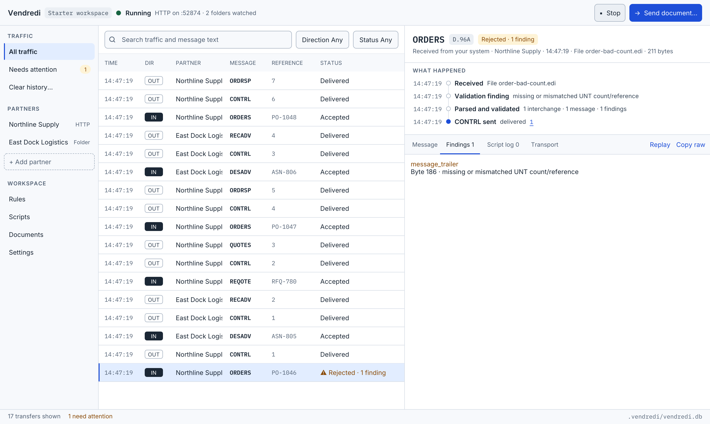
| What you see | Next check |
|---|---|
| Rejected · 1 finding | Read the finding and offset. PO-1046 declares 99 segments in UNT. Count UNH through UNT, then compare with the valid seven-segment PO-1048. Submit corrected bytes as a new input. |
| No rule matched | Compare the UNH message type, version and release with the partner’s ordered rules. Open the relevant rule, save the correction and replay the inbound transfer. |
| Action failed | Inspect the execution timeline and script log. Check the configured file, entry function, and returned EDIFACT message before replaying. |
| Delivery failed or interrupted | Open Transport. Restore the receiver or folder, then choose Resend on the outbound transfer. Inspect the new attempt and its destination. |
Replay feeds the original inbound bytes through the current rules as a new transfer. This can generate additional replies and advance script counters. Resend repeats an outbound transfer using its recorded bytes. Choose the operation according to which side of the exchange you want to exercise.
HTTP returned 202, but I have no business reply
Start with the inbound row. Read Findings and Rule matched, then look for an outbound row with a delivery failure. For the starter supplier, the reply destination is a folder. The HTTP receipt and the business reply are separate steps.
A file is still sitting in my watched folder
Check Running, the selected partner’s resolved intake path and the suffix on the completed filename. A .part file stays there until you rename it to the configured suffix. Check that you copied the full incoming interchange, including UNB and UNZ.
The listener starts stopped
Read the status message, then inspect the HTTP listener in Settings. If another process owns the port, close that listener or save a free port and choose Start. If another Vendredi instance owns the same workspace, close that instance before retrying.
Manage workspace history
Settings → Edit settings controls the HTTP listener, local EDIFACT identity and retention. The workspace path at the top is the base for relative channel folders and files. The local engine stores traffic in .vendredi/vendredi.db. To back up an entire workspace, close Vendredi and copy the whole directory, including its hidden files, configuration, documents and scripts.

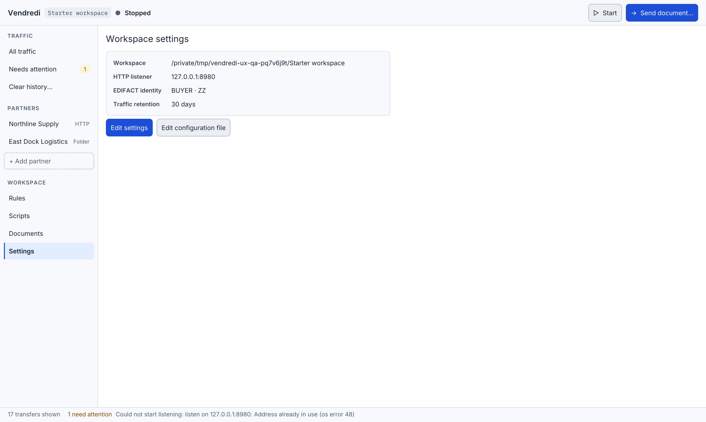
Retention removes old history when the workspace opens. Shortening the period in Settings asks for confirmation before applying it. For a recent test run, choose Traffic → Clear history… instead.

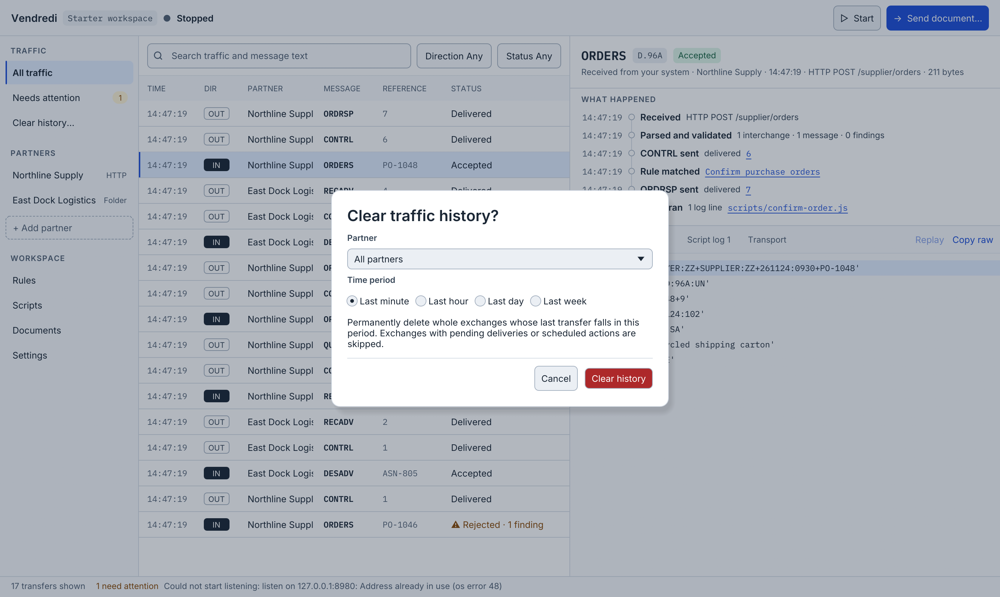
- Select All partners or a single partner. A partner you removed is available with (removed) while its transfers still exist.
- Choose Last minute, Last hour, Last day or Last week. The age of the last transfer determines whether the whole exchange falls in the window.
- Review both selections, then choose the red Clear history. The footer reports how many exchanges were cleared. Pending deliveries and scheduled actions are skipped.
Cleanup preserves partner counters and script state. Files already delivered into reply folders remain there. Use a separate workspace when you want independent counters, configuration and traffic for another scenario.
Use the same workspace headless
The desktop and command-line runner use the same files, rules, scripts and persistent history. Close the desktop for that workspace before starting headless mode. From the folder containing the executable and the extracted starter, run:
./vendredi run --headless ./vendredi-starterThe runner prints a JSON ready event and subsequent events one per line. Submit the HTTP sample from another terminal, or publish a file to an intake folder. While the runner owns the workspace, enter commands on its standard input. Use a JSON array when arguments contain spaces.
["send", "Northline Supply", "documents/packing-supplies-quote.edi"]
["send", "Northline Supply", "scripts/confirm-order.js", "confirmOrder"]
quitWith the workspace closed, use a transfer ID from your own run for a one-shot inspection. The last command reopens the desktop on the resulting history.
./vendredi inspect ./vendredi-starter 1
./vendredi gui ./vendredi-starterStart a clean bundled example. Run ./vendredi init ./demo and ./vendredi gui ./demo to create and open the single-Supplier sample. Keep the illustrated starter available for tests that need multiple partners or JavaScript state.